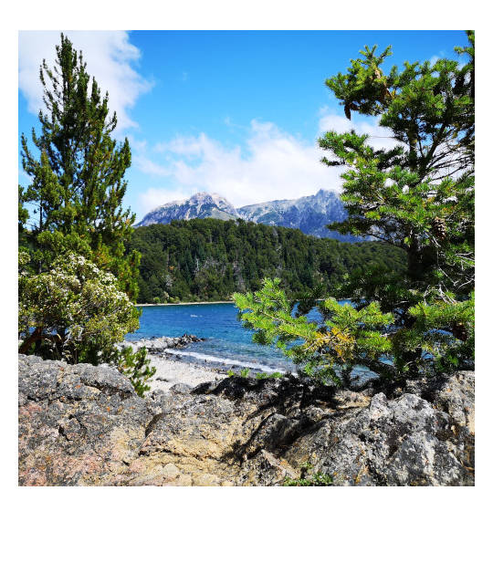

Deine Rundreise durch den Norden von Patagonien
Mit dieser Rundreise verpasst du keines der Highlights im Norden von Patagonien. Kein langes Suchen auf vielen verschiedenen Homepages, sondern einfach diesen Reiseverlauf für dich übernehmen und die Höhepunkte dieser von Naturwundern gesäumten Gegend entdecken und genießen.
Überblick Route

Tag 1 (Übernachtung in Bariloche): Mache eine Fahrradtour auf dem Circuito Chico und kehre in der Patagonia Brauerei ein
Tag 2 (Übernachtung in El Bolsón): Besteige für einen traumhaften Ausblick über die Seenlandschaft den Cerro Campanario am Morgen und fahre am Nachmittag mit dem Bus nach El Bolsón
Tag 3 (Übernachtung in El Bolsón): Wandere zur Cajón del Azul und bewundere den türkisblauen Rio Azul, wie er sich durch das Gebirge schlängelt
Tag 4 (Übernachtung in Villa La Angostura): Nehme am Morgen den Bus nach Bariloche, um von dort deinen Roadtrip in das Sieben Seen Gebiet zu starten
Tag 5 (Übernachtung in Villa La Angostura): Mache eine Bootstour zum Parque Nacional Los Arrayanes, um die seltenen Arrayán-Myrtenbäume zu erkundschaften
Tag 6 (Übernachtung in San Martín de los Andes): Fahre entlang der sieben Seen Route nach San Martín de los Andes
Tag 7 (Übernachtung in Bariloche): Besuche den Lanín Nationalpark, um den schönsten Berg Argentiniens zu bestaunen und fahre am Abend zurück nach Bariloche
Reisezeit
Die beste Reisezeit ist im argentinischen Frühling und Sommer im Zeitraum von November bis März. Der November und der Dezember gehören noch zu der Vorsaison, wodurch sich diese beiden Monate aufgrund geringer Touristenzahlen besonders anbieten. Allgemein ist zu beachten, dass im Sommer die Temperaturen bis auf 10 °C runtergehen oder auf 30°C ansteigen können, sodass man Kleidung für alle Temperaturen mitnehmen sollte.
Kosten
Aufgrund der stark schwankenden Währungssituation in Argentinien ist es schwer Kostenkalkulationen zu machen. Für Übernachtungen in Hostels habe ich im Schnitt 20 Euro pro Nacht bezahlt. Ein gutes Essen mit Getränk im Restaurant bekommt man für ungefähr 10 Euro, Imbisse und einige Restaurants bieten auch günstigere Speisen an. Die Transporte in Bussen und der Mietwagen für vier Tage, inklusive Sprit, haben ungefähr 160 Euro gekostet. Für die im Reiseverlauf genannten Aktivitäten und Eintritte beliefen sich meine Kosten auf circa 40 Euro (Stand März 2020).
Es empfiehlt sich möglichst viele Sachen in bar zu bezahlen und das Geld nicht vom Bankautomaten abzuholen, sondern vor Ort Geld zu wechseln. Dabei erhält man den inoffiziellen Wechselkurs, der deutlich besser ist. Alternativ kann man sich auch Geld per Western Union nach Argentinien schicken, um den ähnlichen Wechselkurs zu erhalten.
An- und Abreise
Bariloche hat einen Flughafen, der mehrmals täglich von Buenos Aires aus angeflogen wird. Vom Flughafen aus gibt den öffentlichen Bus 72, der ungefähr alle anderthalb Stunden zwischen dem Flughafen und der Innenstadt verkehrt. Im Bus kann nur mit der Sube Card bezahlt werden. Zusätzlich wird ein privater Shuttlerservice in Kleinbussen für 250 ARS angeboten, der vor Ort am Flughafen gebucht werden kann (Stand März 2020).
Von den meisten großen Städten im Land gibt es Fernbusverbindungen nach Bariloche. Eine Busverbindung, um in den Süden von Patagonien nach El Calafate zu gelangen, dauert ungefähr 24 Stunden.

Tipps
Hole kein Geld am Geldautomaten ab, sondern schicke dir selbst Geld über Western Union. Der Wechselkurs ist deutlich besser.
Nehme Kleidung für jede Wetterlage mit.
Habe eine Sube Card zur Nutzung des öffentlichen Nahverkehrs. Diese kann man in vielen Kiosken kaufen und in mehreren Städten in Argentinien nutzen.

Reiseverlauf
Mit dem Fahrrad durch die Seenlandschaft bei Bariloche (Tag 1)
Unterkunft
Es gibt zahlreiche gute Unterkünfte in Bariloche in allen Preisklassen. Das Hostel Hospedaje Penthouse 1004** hat innerhalb von Bariloche eine besonders zentrale Lage und, da es im obersten Stockwerk eines Hochhauses ist, einen unglaublichen Ausblick auf die Stadt und den See. Ein sehr familiäres Hostel ist alternativ das Hostel Achalay**, welches ein kostenfreies Frühstück anbietet.
Aktivität: Fahrradtour auf dem Circuito Chico
Zwanzig Kilometer außerhalb von Bariloche startet der berühmte Rundweg Circuito Chico, der einen in die Berg- und Seenwelt dieser Region eintauchen lässt. Aufgrund der Länge von nur 27 Kilometer bietet sich das Fahrrad als perfektes Fortbewegungsmittel zur Erkundung der Gegend an. Es ist zwar teilweise hügelig, doch die Anstrengung, für die vielen kleinen Abzweigungen, die man nur zu Fuß oder mit dem Fahrrad nehmen kann, lohnt sich. Und das Gefühl, wenn man einen Hügel mit dem Mountainbike herunterfährt, der Wind einem ins Gesicht bläst und man eine Aussicht auf Bergmassive und strahlend blaue Seen hat, ist unbezahlbar.
Um von Bariloche zum Start des Circuito zu gelangen, muss man einen Bus nehmen. Die Buslinien in diese Richtung sind die Nummer 10 und 20 und fahren ungefähr alle 20 Minuten von der Hauptstraße Francisco Perito Moreno ab. Bezahlen kann man in diesen nur mit der Sube Card. Es gibt zwei verschiedene Fahrradverleihe, für welche man beide eine Station nach dem Cerro Campanario aus dem Bus aussteigt. Beim Fahrradverleih Ciruito Chico Aventura** kostet ein Premiumfahrrad 1200 ARS und bei Cordillera Bike** 1000 ARS (März 2020). Normalerweise sind die Fahrräder bei Cordillera Bike in einem etwas besseren Zustand. Sollte man nicht zum frühen Morgen bereits an der Verleihstation sein,ist es ratsam, sich in der Hochsaison zuvor ein Fahrrad zu reservieren.
Die Tour kann in beide Richtungen gemacht werden. Ich persönlich empfehle gegen den Uhrzeigersinn zu fahren, da man dann die Möglichkeit hat am späten Nachmittag in der Patagonia Brauerei die Tour ausklingen zu lassen. Allgemein lohnt es sich möglichst viele kleine Abzweigungen an der Strecke zu nehmen, um so einsame Strände an den Seen mit wundervollen Ausblicken zu entdecken.
Zusätzlich gibt es ein paar Orte, die man auf der Tour besuchen sollte:

Parroquia San Eduardo
Nach 6,6 Kilometer kommt auf einem kleinen Hügel eine kleine Holzkirche mit einem Panaorama Blick auf das prestigeträchtige Llao Llao Hotel.
Llao Llao Hotel**
Nur einen Kilometer von der Kirche entfernt steht eines der berühmtesten und nobelsten Hotels Argentiniens. Der doch sehr stark an ein österreichisches Landhaus errinnernde Stil ist typisch für diese Gegend in Argentinien. Die Innenarchitektur mit Sesseln aus Rehfellen, großen Geweihen an den Wänden und einem riesigen Kamin kann man sich bei einem Kaffee oder Tee anschauen. Für Nichtübernachtungsgäste gibt es die Möglichkeit im Foyer das Restaurant zu nutzen.
Villa Tacul Aussichtspunkt
Weiter geht die Fahrradtour: Vier Kilometer später erreicht man einen Wanderweg zum Aussichtpunkt Villa Tacul. Dank des Fahrrads muss man diesen Weg nicht laufen, sondern kann mit diesem zum Aussichtspunkt fahren. Am Aussichtpunkt hat man neben einer hervorragenden Sicht über die Seen, auch kleine Strände zum Entspannen.
Patagonia Brauerei**
Wenn der größte der Teilrunde geschafft ist und man schon 20 Kilometer hinter sich gebracht hat, kommt auf der linken Seite die Patagonia Brauerei mit einem großen Biergarten. Dort kann man neben einem Snack bei schönster Aussicht auf den See und die Berge eine Vielzahl an unterschiedlichen Bieren probieren. Meiner Meinung nach ist es die Brauerei mit dem wahrscheinlich schönsten Ausblick der Welt.
Hinweis: Natürlich kann man den Circuito Chico auch mit dem Auto abfahren und die entsprechenden Stopps machen. Alternativ gibt es auch organisierte Touren entlang dieser Naturschönheiten.
Wandern in Bariloche und El Bolsón (Tag 2 und 3)
Unterkunft
Es gibt viele wunderschöne und individuelle Unterkünfte in El Bolsón. Besonders ausgefallen ist das „Earthship Patagonia“**, welches aus mehren, sehr unterschiedlichen Gebäuden und Zelten besteht. Es gibt die Möglichkeit in mongolischen Jurten, in Tipis oder in einem Niedrigenergiehaus mit Höhlencharakter zu schlafen. Es werden Hostelbetten und Privatzimmer in dieser Unterkunft angeboten und man merkt den Hippiecharakter in der kompletten Anlage.
Transfer
Fahre mit dem Bus am späten Nachmittag des zweiten Tages von Bariloche nach El Bolsón. Die Busfahrt dauert ungefähr zwei Stunden. Die Busse fahren in Bariloche am Bus Terminal ab, zu welchem man mit den meisten lokalen Bussen aus der Stadt gelangt. In El Bolsón kann man vom Bus Terminal zur Unterkunft laufen. Eine Übersicht aller Abfahrtszeiten und Busanbieter findest du hier.
Aktivität Tag 2: Besteige dem Cerro Campanario
Eine Aussicht über eine grün, graue Bergwelt und zu deren Füßen Seen und Lagunen in den sattesten Blautönen: Genau das erwartet einen auf der Spitze des Cerro Campanario. Obwohl es ein berühmtes Touristenziel in der Gegend ist, kann man diese Aussicht mit einem kleinen Trick ganz für sich allein haben. Es gibt eine Seilbahn und eine Fußweg auf den Cerro Campanario hinauf. Da die Seilbahn aber erst um neun Uhr am Morgen startet, muss man einfach seine Wanderung von ungefähr 45 Minuten früh genug starten und mit etwas Glück gehört die komplette Aussichtsplattform einem allein. Der Wanderweg beginnt mit Blick auf die Seilbahn ungefähr 100 Meter auf der rechten Seite von dieser und ist ein wenig versteckt.
Die Seilbahn fährt von 9 bis 17:30 Uhr und kostet 500 ARS (März 2020).
Um zum Ausgangspunkt für diese Aktivität zu gelangen, nehme man den Bus 10 oder 20 und sage dem Fahrer, dass man am Cerro Campanario heraus möchte. Normalerweise sagt der Busfahrer diese Station aufgrund seiner Beliebtheit an.
Am Nachmittag mache dich dann auf den Weg mit dem Bus nach El Bolsón.

Aktivität Tag 3: Wandere zum Cajón del Azul
Distanz: 16 km - Höhenmeter: 240 m - Dauer: 7 Stunden - Schwierigkeitsgrad: Mittel*
Ein Fluss, der so türkis ist wie das Wasser in der Karibik, der sich durch die Berge geschlungen hat, und so eine einzigartige Landschaft entstehen ließ: Das ist der Rio Azul in El Bolsón. Der Cajón del Azul ist die Stelle des Rio Azul, wo sich der Fluss zwischen 30 Meter hohen Felsen hindurchzwängt und dabei in seinen schönsten Blautönen schimmert.
Für alle Wanderungen in dem Gebiet muss man sich zuvor bei der Behörde ANPRALE registrieren. Eine Registrierung ist an den Eingängen des Parkes oder im Internet möglich. Um Wartezeiten zu vermeiden empfiehlt sich die Registrierung im Internet über die Anprale Homepage.
Die Wanderung führt über breite Wanderwege und man kreuzt regelmäßig den Rio Azul. Sollte das Wetter gut genug sein, lädt der Rio Azul an vielen Stellen zu einem kleinen Bad ein. Auf dem Weg und auch am Cajón del Azul gibt es Refugios, welche Speisen und Getränke anbieten. Das Ufer des Rio Azul lädt jedoch auch zu einem herrlichen Picknick ein.
Die Tagestour zum Cajón Azul startet in Wharton, was ungefähr 14 Kilometer außerhalb von El Bolsón liegt. Es gibt einen Bus, der zu unbestimmten und wechselnden Zeiten dorthin fährt. Man sollte in seiner Unterkunft am Tag zuvor fragen, wann der Bus derzeitig fährt. Ein Taxi kostet alternativ um die 400 ARS und in einer Gruppe von vier Personen ist der Preis vergleichbar mit dem Bus. Von Wharton aus ist die Wanderung ausgeschildert.
Hinweis: Im kompletten Naturschutzgebiet gibt es kein Mobilfunkempfang.
Und der Roadtrip beginnt in Richtung Villa La Angostura (Tag 4 und Tag 5)
Unterkunft
Eine schöne, preisgünstige Unterkunft am Ortseingang mit Privatzimmern ist das Departamentos de El Mercado**. Wer ein Hostel bevorzugt findet eine gemütliche Unterkunft im Hostel La Angostura**.
Aktivität Tag 4: Von El Bolsón bis Villa La Angostura
An diesem Morgen nehme den Bus zurück nach Bariloche und hole dort deinen Mietwagen ab. Sollte man sich gegen einen Mietwagen entscheiden gibt es auch Busverbindungen nach Villa La Angostura, jedoch ist auf dem Roardtrip in den folgenden Tagen der Weg das Ziel, sodass man viele schöne Aussichtspunkte mit dem Bus verpasst.
Es gibt zahlreiche Mietwagenanbieter in Bariloche. Neben den großen Anbietern gibt es viele lokale Anbieter, bei denen allerdings primär Spanisch gesprochen wird, welche jedoch bessere Preise anbieten. Wenn man die Summe Bar bezahlt, gibt es oft weitere Rabatte. Eine Basisversicherung ist standardmäßig mit im Preis enthalten, welche jedoch eine hohe Selbstbeteiligung im Schadensfall hat. Die lokalen Anbieter findet man am einfachsten per Google Maps, wenn man einfach „Car rental Bariloche“ eingibt. Ich habe gute Erfahrung mit Driver Bariloche** gemacht.
Die Fahrt mit dem Mietwagen am Nachmittag führt entlang Nahuel Huapi Sees mit einigen schönen Aussichtpunkten auf den See und die Berge.
Aktivität Tag 5: Besuche den Parque Nacional Los Arrayanes
Die immergrünen Arrayán-Myrtenbäume, die eine besonders schöne rote Rinde besitzen, haben auf der Quetrihué Halbinsel einen eigenen Nationalpark gewidmet bekommen. Besonders an der zum Wasser hinzeigenden Südspitze befindet sich ein annähernd reiner Arrayán-Wald, der zum Schutz der Bäume von Stegen zum Wandern durchzogen ist. Der Eintritt des Nationalparks kostet 400 ARS und muss vor dem Betreten der Halbinsel an einer Holzhütte gekauft werden (Stand März 2020).
Es gibt unterschiedliche Möglichkeiten den Arrayán Wald zu besuchen. Ein zwölf Kilometer langer Fuß- und Fahrradweg führt über die Halbinsel, sodass man eine Tageswanderung durch den Nationalpark machen kann. Alternativ gibt es Bootstouren vom Puerto Angostura direkt an die Südspitze der Halbinsel. Es bietet sich an eine Strecke mit dem Boot zu fahren und die andere Strecke zu wandern. Entscheidet man sich für eine Bootsfahrt, muss man sich zwischen zwei Bootsanbietern entscheiden, die jeweils zu unterschiedlichen Zeiten abfahren. Ein Anbieter fährt auf der Westseite und der andere an der Ostseite entlang. Die aktuellen Abfahrtszeiten, sowie den Preis für die Cau Cau Fähre** findest du hier und für den Futaleufu Catamaran** hier.
Sieben Seen Roadtrip nach San Martín de los Andes (Tag 6)
Unterkunft
Die Unterkunftskosten sind allgemein in San Martín de los Andes verhältnismäßig hoch. Ein gutes, zentral gelegenes, preiswertiges Hostel ist das Alhue Patagonia Hostel**. Allgemein empfiehlt es sich, eine Unterkunft an der dem See zugewandten Seite der Stadt zu beziehen.
Aktivität Tag 6: Der Roadtrip
Ein Teil der prominenten Rute 40, die sich von der Grenze Boliviens über 5000 Kilometer bis in den Süden von Patagonien quer durch Argentinien schlängelt, ist im Bereich von San Martín de los Andes gesäumt von einer malerischen Seenlandschaft mit dem Namen „Ruta de los Siete Lagos“. Die Strecke mit Aussichtspunkten auf Seen in allen Blautönen und vielen Wandermöglichkeiten ist insgesamt 108 Kilometer lang. Sie führt von Villa La Angostura nach San Martín de los Andes, entlang des Espejo, Correntoso, Villarino, Falkner, Escondido, Machónico, und dem Lácar See. Es gibt zahlreiche kleine Abzweigungen, die zu oft einsamen Stränden führen.
Die Route ist komplett ausgeschildert und Hinweisschilder zeigen an welchem See man sich gerade befindet. Bezüglich der vielen Abzweigungen muss man einfach mutig sein und schauen, wo man rauskommt. Viele nicht asphaltierte Wege belohnen einen am Ende mit türkisen Bächen, die in blaue Seen fließen und Stränden, die zum Verweilen einladen.
Auf zum schönsten Berg Argentiniens und zurück nach Bariloche (Tag 7)
Aktivität Tag 7: Ausflug zum Vulkan
Genau auf der Grenze zwischen Argentinien und Chile liegt der Vulkan Lanín, der seinen Namen aus der Sprache der Mapuche, der Ureinwohner Argentiniens hat, welcher soviel bedeutet wie „erstickt“. Weit verbreitet gilt er aufgrund seiner Geometrie und der ganzjährigen, weißen Schneehaube als der schönste Berg Argentiniens und wird oft mit dem Fuji in Japan verglichen.
Eine besonders schöne Sicht hat man vom See Huechulafquen auf den Vulkan. Entlang des Sees führt eine Schotterstraße, von der mehrere kleine Wanderungen abgehen. Es lohnt sich einfach die 36 Kilometer lange Straße entlang zu fahren und Stopps an schönen Aussichtpunkten einzulegen.
Von San Martín de los Andes bis zum Südeingang des Nationalparks mit den Koordinaten -39.793243, -71.215161 sind es ungefähr 66 Kilometer. Um dorthin zu gelangen verlasse man San Martín de los Andes auf der Ruta 40 in Richtung Junín de los Andes. Nachdem man Junín de los Andes durchkreuzt hat, gibt es wenige Kilometer weiter eine Abbiegung links auf die Ruta 61, welche direkt zum Eingang des Nationalparks führt. Am Eingang gibt es einen Eintritt in Höhe von 400 ARS zu bezahlen (Juni 2020).
Nach dem Besuch des Nationalparks fahre dann zurück nach Bariloche, wo du den Mietwagen wieder abgibst.
Buchungsübersicht
Hier ist eine Übersicht über alle Buchungen, die du vor der Reise tätigen solltest.
Bustickets
BusBud besitzt eine gute Übersicht über alle verfügbaren Anbieter und Zeiten für die Strecken, sodass ich empfehle einfach immer zuerst auf der BusBud** Seite zu schauen.
- Busticket für Tag 2 am Nachmittag: Bariloche nach El
Bolsón
- Busticket für Tag 4 am Vormittag: El Bolsón nach
Bariloche
Mietwagen
Es gibt zahlreiche Mietwagenanbieter in Bariloche. Neben den großen Anbietern gibt es viele lokale Anbieter, bei denen allerdings primär Spanisch gesprochen wird, welche jedoch bessere Preise anbieten. Wenn man die Summe bar bezahlt gibt es oft weitere Rabatte. Eine Basisversicherung ist standardmäßig mit im Preis enthalten, welche jedoch eine hohe Selbstbeteiligung im Schadensfall hat.
Die lokalen Anbieter findet man am einfachsten per Google Maps, wenn man einfach „Car rental Bariloche“ eingibt. Ich habe gute Erfahrung mit Driver Bariloche** gemacht.
Ein Mietwagen wird von Tag 4 bis Tag 7 benötigt.
Übernachtungsübersicht und Empfehlungen
- Tag 1 in Bariloche: Hostel Hospedaje Penthouse 1004 oder
Hostel Achalay**
- Tag 2 und Tag 3 in El Bolsón: Earthship Patagonia**
- Tag 4 und Tag 5 in Villa La Angostura: Departamentos de El
Mercado**
oder Hostel La Angostura**
- Tag 6 in San Martín de los Andes: Alhue Patagonia
Hostel**
- Tag 7 in Bariloche: Hostel Hospedaje Penthouse 1004**
oder Hostel Achalay**
Aktivitätsvorbereitungen
- Reservierung Fahrrad am Circuito Chico:
Ciruito Chico Aventura**
oder
Cordillera Bike**
- Registrierung Wanderung in El Bolsón:
Anprale

Marys Meinung

Disclaimer
*Die Schwierigkeitsgrade der einzelnen Wanderungen sind Einschätzungen. Ich habe die Wanderungen auf dieser Seite gemacht und denke, dass diese Einteilungen passend sind, jedoch bin ich ein Hobbywanderer, sodass ich KEINE fachmännische Meinung abgeben kann. Die gegebenen Wetterbedingungen sollten bei der Entscheidung zu einer Wanderung immer berücksichtigt werden. Allgemein sind alle Aktivitäten dieser Seite Erfahrungen, Anregungen und Tipps. Die Verantwortung bei der Ausführung und Haftung obliegt bei dir. Alles auf dieser Seite ist nach meinem besten Wissen und Gewissen zusammengetragen, jedoch keine Garantie für Richtigkeit.
**Das genannte Unternehmen ist eine Empfehlung meinerseits. Ich habe KEINE Gegenleistung von diesem erhalten.